Aura
Player
Enemy
Round
You are an *auracle*, a practitioner of the ancient art of channeling the latent life energy in *bones* into a magical substance called *aura*. Different types of bones from different monsters have different stores of life energy. As you draw aura from one type of bone, your aura meter will increase by a specific number.
Within each round, bones of the same shape will grant the same amount of aura. You'll need to reach precise aura levels to perform actions, so pay close attention to the shape of the bones and the amount your aura meter increases by.
If your aura level reaches a precise value, you can cast a magical spell. The spells that can be performed are listed at the bottom of the screen. One type of spell is a damage-dealing spell. Your enemy's hit points will be decreased by the energy value of the spell. Another type of spell is a self-heal. Your hit points will be raised by the energy value of the spell.
Choose which bones to draw energy from wisely. If you overshoot the amount of aura needed for a specific spell, you will miss your chance to cast it.
Spells